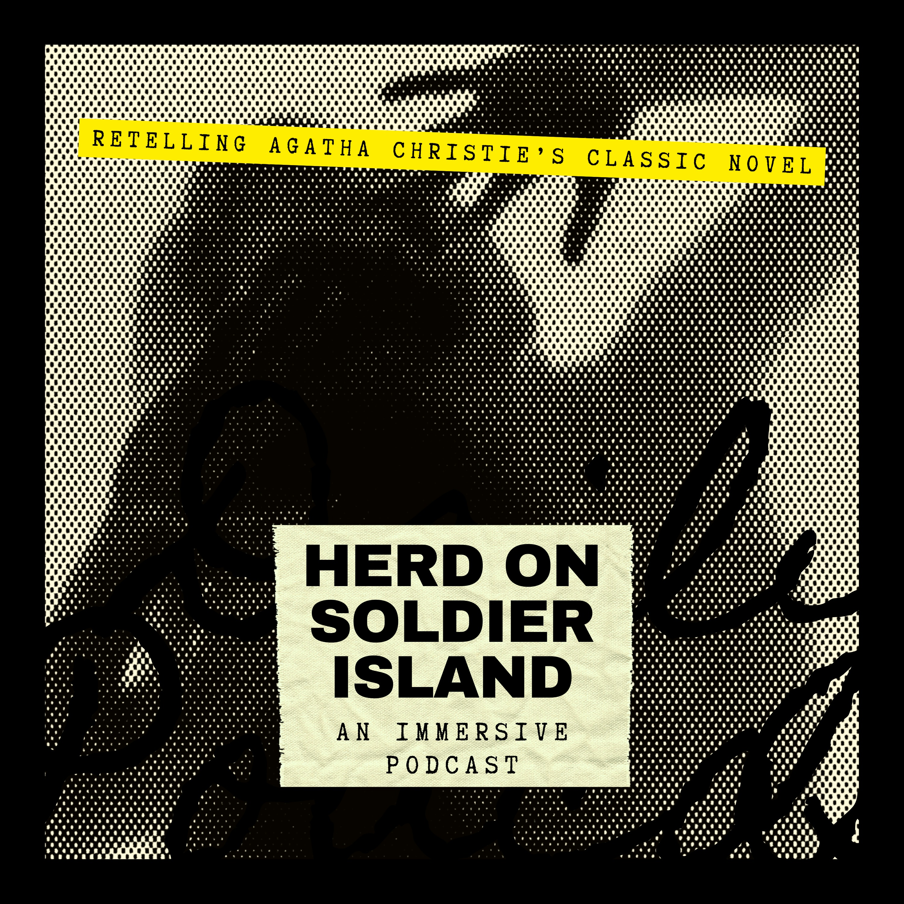

I was responsible for every stage of the production, including script adaptation, sound design, music selection, audio mixing, and post-production. The project explores the expressive potential of sound as a storytelling medium, using layered audio to build tension and create an immersive listening experience.
